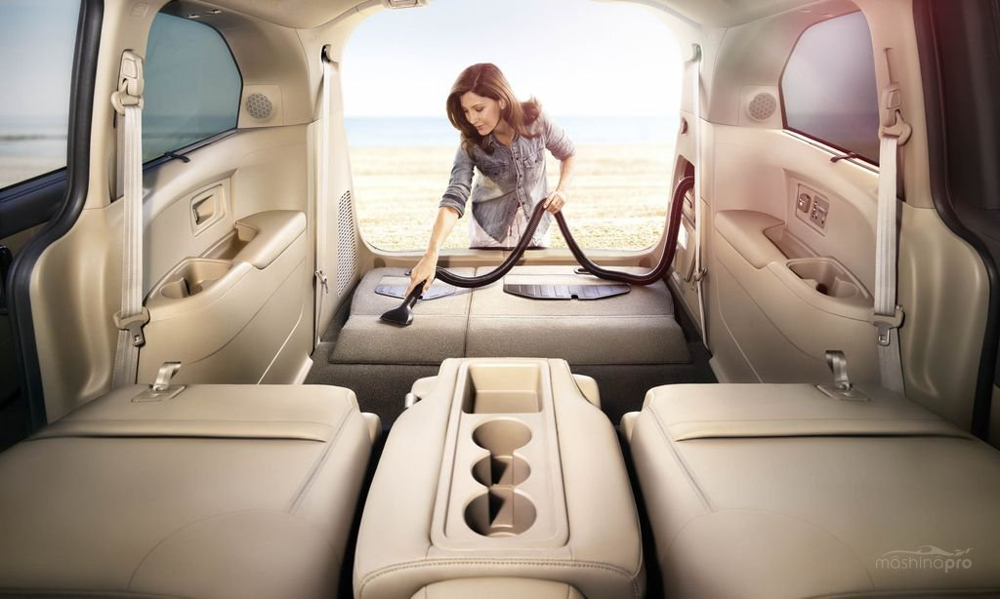

Корисні поради водіям taxiconn.com.ua
Щоб мати рекомендації серед користувачів, а також отримувати можливі додаткові чайові від клієнтів можете
скористатися нашими порадами, що нададуть вам змогу покращити ваш сервіс
Також в цьому розділі ви можете знайти лайфхаки, що полекшать вашу роботу та зроблять її ще приємнішою для вас та
вашого автомобілю, що є важливою складовою наших працівників

Автомобіль
- Слідкуйте за чистотою вашого авто
- Підтримуйте чистоту в салоні та не тримайте в салоні зайвих речей
- Регулярно проходьте ТехОгляд
- Краще, щоб в салоні не було зайвих запахів: цигарки, ароматизатори, кава...
Водій
- Будьте охайними: чистий одяг, відсутність неприємних запахів...
- Не запізнюйтесь, а приїхавши заздалегідь не надзвонюйте клієнтові
- Користуйтесь навігатором (навіть якщо знаєте короткий шлях)
- Дотримуйтесь Правил Дорожнього Руху
Пасажир
- Обов'язково вітайтеся та прощайтеся з клієнтом
- Допомагайте грузити особисті речі до багажника
- Дотримуйтесь правил етикету
- Завжди відповідайте на питання користувачів, але не втомлюйте бесідою